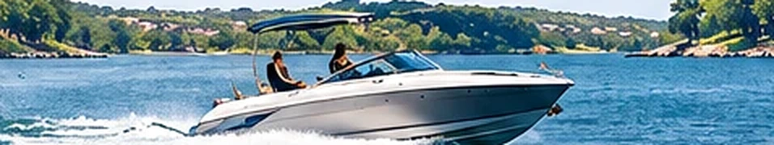

TODAY
Mon Nov 2
83°
8% daytime rain chance
Humid, clouds and afternoon sun.
The city announced a Veterans Day closure for Wednesday, November 11. Residents should check city channels for service updates.
READ FULL STORY ›Burnet officials have alerted residents to mail solicitations seeking additional payments. Verify notices directly with the city.
READ FULL STORY ›The city is seeking up to $750,000 in state funding for infrastructure improvements; an application is not an award.
READ FULL STORY ›Texas 78657 · Central Time
Local alerts, rainfall outlook & weather headlines
Horseshoe Bay and the surrounding Hill Country
Loading the latest official forecast discussion…
Horseshoe Bay · updated NWS hourly forecast

Playing weather · Horseshoe Bay area
Rotating quotes · TradingView data may be delayed
Find businesses and services across Horseshoe Bay, Marble Falls, Kingsland and Burnet
Horseshoe Bay · Pedernales Electric Cooperative
Texas Hill Country · local developments, sports and community · November 11, 2026
The city announced a Veterans Day closure for Wednesday, November 11. Residents should check city channels for service updates.
READ FULL STORY ›Burnet officials have alerted residents to mail solicitations seeking additional payments. Verify notices directly with the city.
READ FULL STORY ›The city is seeking up to $750,000 in state funding for infrastructure improvements; an application is not an award.
READ FULL STORY ›Burnet High School's marching band is scheduled for the UIL 4A state contest in San Antonio on November 11.
READ FULL STORY ›The community is mourning Officer Clayton Kleen, whose death was reported November 10.
READ FULL STORY ›Recent rainfall raised the Llano River and affected low-water crossings; verify current road conditions before travel.
READ FULL STORY ›Original local guides and weather features · permanent articles
Lake LBJ is one of the best-known recreation destinations in the Highland Lakes region of Central Texas. Around Horseshoe Bay, resident…
READ ARTICLE → WEATHER GUIDE
WEATHER GUIDEFall in the Texas Hill Country can bring sharp changes in temperature as cold fronts move south. Warm afternoons may give way to notice…
READ ARTICLE →Horseshoe Bay sits in the Texas Hill Country near Lake LBJ, making it a convenient base for outdoor recreation and visits around the Hi…
READ ARTICLE →Lake LBJ is part of the Highland Lakes chain along the Colorado River. Water conditions can change as upstream inflows, rainfall, and dam operations affect the system.
READ ARTICLE →WEATHER SAFETYThe Texas Hill Country has steep terrain, rocky ground, and creeks that can rise quickly during intense rainfall. A storm several miles upstream may create dangerous conditions at a crossing even when little rain is falling where you are.
READ ARTICLE →Marble Falls is a nearby destination for residents and visitors staying around Horseshoe Bay. Its downtown area, restaurants, parks, and lakeside scenery make it a convenient outing.
READ ARTICLE →Horseshoe Bay experiences hot summers, generally mild winters, and changing conditions during spring and fall. Weather can differ noticeably between lakeside locations and higher terrain.
READ ARTICLE →A successful day on Lake LBJ starts before launching. Check the forecast, lake conditions, and any current advisories from the responsible local authorities.
READ ARTICLE →Rotating Hill Country airports + national airport observations · NOAA/NWS data
Automatic summary · sourced from the live dashboard
Text-only headline links from independent news publishers. Refreshes every 15 minutes. Sources and timestamps are shown when available. Headlines may be delayed or unavailable; publishing permissions remain subject to each source's terms.
Readings are copied automatically from their source panels. Unavailable data are not estimated. Weather forecasts are not station observations; market prices may be delayed.